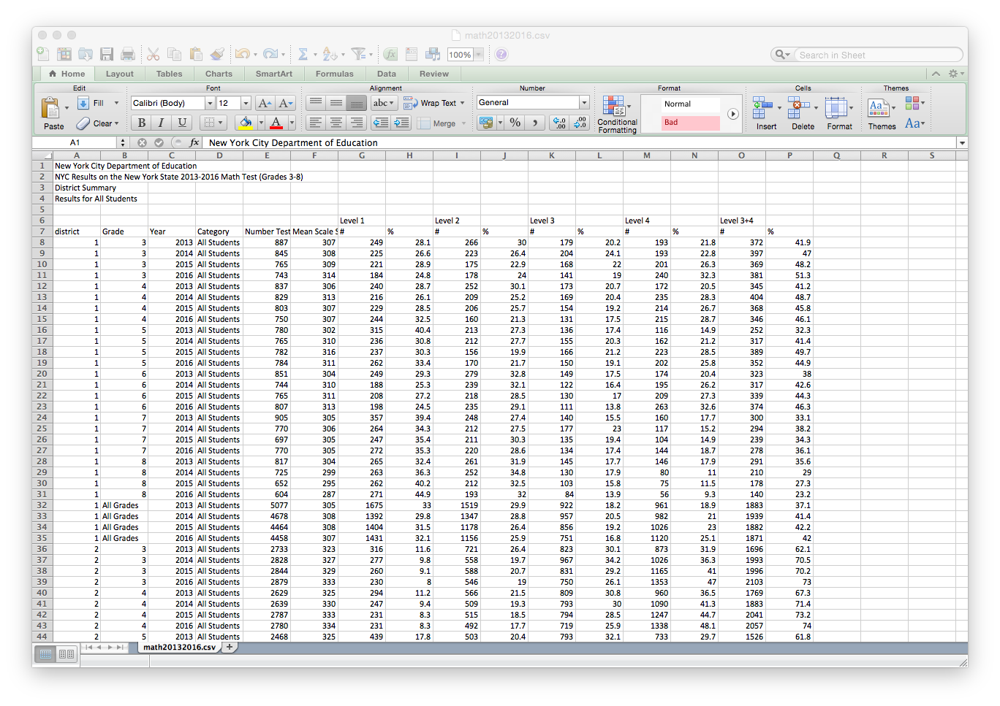

Folium provides a simple interface to leaflet.js for mapping geoJSON data. Work through example from tutorial that uses a geoJSON layer Folium.
These have moved since this classwork was written, a similar version is at . Note that the rewrite of the examples assumes that you are using jupyter and displays in-line. To save an .html file to diplay, you need to save it (mapName.save(outfile='htmlFile.html'))
Using your the geoJSON file that you created. What do the different tile options do? That is, how do the following options change your map:
An useful way to display data is via choropleth maps, were each region is shaded to varying degrees. In the simplest form, we can use a geoJSON file to add information (such as political or administrative boundaries) as a "layer" on our maps. But, we can also, shade the regions by values such as density, employment, or school test scores:
To create a map with shaded regions, we need:
(scroll down to "School, Police, Health & Fire" and export as geoJSON, called schoolDistricts.json).
(If you have troubles downloading, here's the file: schoolDistricts.json
(download the District math scores, open in your favorite spreadsheet program, and export the sheet of scores for all students as a CSV file, called math20132016.csv).
Let's start by adding the geoJSON layer for our map (we'll add in shading in the next section).
Assuming you have the files named as above, and in the same directory, we can start with:
import folium
#Create a map:
schoolMap = folium.Map(location=[40.75, -74.125])
#Create a layer, shaded by test scores:
schoolMap.choropleth(geo_path="schoolDistricts.json",
fill_opacity=0.5, line_opacity=0.5
)
#Output the map to an .html file:
schoolMap.save(outfile='testScores.html')
In your favorite IDE, run this program. The import statement, and the creating and saving are the same as before. The only new function is choropleth(). It has as input parameters:
Once we have data, we will add a few more parameters to link in the data and change the color shading.
For data, we'll use the school test scores that you downloaded above. The file has a lot of information:

For our first map, we'll focus on the most recent year, 2016, and the results for 8th grade.
import pandas as pd
#Read in the test scores
fullData = pd.read_csv('math20132016.csv', skiprows = 6)
(we're skipping the extraneous information on the first 6 rows).
scores2016 = fullData[fullData.Year == 2016]
scores8th2016 = scores2016[fullData.Grade == "8"] print(scores8th2016)
Our new dataFrame is significantly smaller-- only 33 lines of data, one corresponding to each of the 33 regional school districts in New York City. We would like to shade each district by its average test score. To do this, we modify the choropleth() command to be:
schoolMap.choropleth(geo_path="schoolDistricts.json",
fill_color='YlGn', fill_opacity=0.5, line_opacity=0.5,
threshold_scale = [100,200,300,400],
data = scores8th2016,
key_on='feature.properties.SchoolDist',
columns = ['district', 'Mean Scale Score']
)
Let's focus only on the new parameters:
Run your program and examine the map it produces.
Here's the whole file: testScores.py.
File "/Users/stjohn/anaconda/lib/python3.5/site-packages/folium/folium.py", line 601, in choropleth
raise ValueError('Please pass a valid color brewer code to '
ValueError: Please pass a valid color brewer code to fill_local. See docstring for valid codes.
It suggests looking at the docstring for valid codes. The docstring is simple documentation that (well-written) code should contain. The name of the function that's giving the error is choropleth. It's not a stand-alone function (like print) but one that we apply to objects, so, to find its docstring, we need to give the class of the objects to which it belongs (Map) and the package where Map lives (folium):
print(folium.Map.choropleth.__doc__)It prints out a very long message, but we're interested in what colors we can use. Can you find the relevant section in the message:
Apply a GeoJSON overlay to the map.
Plot a GeoJSON overlay on the base map. There is no requirement
to bind data (passing just a GeoJSON plots a single-color overlay),
but there is a data binding option to map your columnar data to
different feature objects with a color scale.
If data is passed as a Pandas dataframe, the "columns" and "key-on"
keywords must be included, the first to indicate which DataFrame
columns to use, the second to indicate the layer in the GeoJSON
on which to key the data. The 'columns' keyword does not need to be
passed for a Pandas series.
Colors are generated from color brewer (http://colorbrewer2.org/)
sequential palettes on a D3 threshold scale. The scale defaults to the
following quantiles: [0, 0.5, 0.75, 0.85, 0.9]. A custom scale can be
passed to `threshold_scale` of length <=6, in order to match the
color brewer range.
TopoJSONs can be passed as "geo_path", but the "topojson" keyword must
also be passed with the reference to the topojson objects to convert.
See the topojson.feature method in the TopoJSON API reference:
https://github.com/mbostock/topojson/wiki/API-Reference
Parameters
----------
geo_path: string, default None
URL or File path to your GeoJSON data
geo_str: string, default None
String of GeoJSON, alternative to geo_path
data_out: string, default 'data.json'
Path to write Pandas DataFrame/Series to JSON if binding data
data: Pandas DataFrame or Series, default None
Data to bind to the GeoJSON.
columns: dict or tuple, default None
If the data is a Pandas DataFrame, the columns of data to be bound.
Must pass column 1 as the key, and column 2 the values.
key_on: string, default None
Variable in the GeoJSON file to bind the data to. Must always
start with 'feature' and be in JavaScript objection notation.
Ex: 'feature.id' or 'feature.properties.statename'.
threshold_scale: list, default None
Data range for D3 threshold scale. Defaults to the following range
of quantiles: [0, 0.5, 0.75, 0.85, 0.9], rounded to the nearest
order-of-magnitude integer. Ex: 270 rounds to 200, 5600 to 6000.
fill_color: string, default 'blue'
Area fill color. Can pass a hex code, color name, or if you are
binding data, one of the following color brewer palettes:
'BuGn', 'BuPu', 'GnBu', 'OrRd', 'PuBu', 'PuBuGn', 'PuRd', 'RdPu',
'YlGn', 'YlGnBu', 'YlOrBr', and 'YlOrRd'.
fill_opacity: float, default 0.6
Area fill opacity, range 0-1.
line_color: string, default 'black'
GeoJSON geopath line color.
line_weight: int, default 1
GeoJSON geopath line weight.
line_opacity: float, default 1
GeoJSON geopath line opacity, range 0-1.
legend_name: string, default empty string
Title for data legend.
topojson: string, default None
If using a TopoJSON, passing "objects.yourfeature" to the topojson
keyword argument will enable conversion to GeoJSON.
reset: boolean, default False
Remove all current geoJSON layers, start with new layer
Returns
-------
GeoJSON data layer in obj.template_vars
Examples
--------
>>> m.choropleth(geo_path='us-states.json', line_color='blue',
... line_weight=3)
>>> m.choropleth(geo_path='geo.json', data=df,
... columns=['Data 1', 'Data 2'],
... key_on='feature.properties.myvalue',
... fill_color='PuBu',
... threshold_scale=[0, 20, 30, 40, 50, 60])
>>> m.choropleth(geo_path='countries.json',
... topojson='objects.countries')
Did you find it? It's excerpted below:
fill_color: string, default 'blue'
Area fill color. Can pass a hex code, color name, or if you are
binding data, one of the following color brewer palettes:
'BuGn', 'BuPu', 'GnBu', 'OrRd', 'PuBu', 'PuBuGn', 'PuRd', 'RdPu',
'YlGn', 'YlGnBu', 'YlOrBr', and 'YlOrRd'.
Note, "Blue" is not on the list, but it is the default if we are filling a solid color. Try some of the other color palettes to decipher the naming scheme.
All students in Seminar 4 are required to give a presentation to the mock city council in May. Logistics will be sent out by MHC soon, but here's an overview:
Given the size of our seminar, we can have 5 to 6 teams. The goal of today's classwork is to organize into teams and sketch out the theme(s) that you would like to address.
From the project topics survey, some are (very!) passionate about a given theme, and for others, they have many different interests. To start the process: